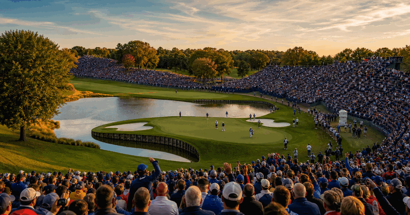

Ryder Cup 2027 at Adare Manor
The Ryder Cup is golf's Europe vs United States team match-play event. The next edition is at Adare Manor in Limerick, Ireland, with event week set for 13-19 September 2027.
 Golf
More golf events
Golf
More golf events
More majors, courses and calendar moments.